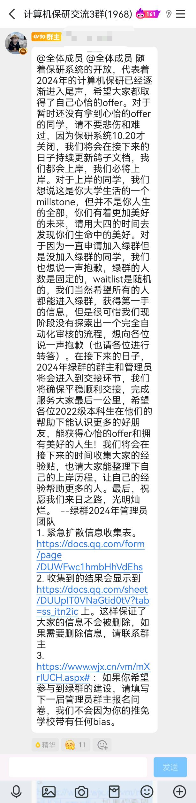

正式的九推指的是928填报国家系统，今年与往年的不同的是，往年填系统和拟录取都是在928同一天完成，今年是928先填报志愿，929再拟录取。
最后我的去向是西北工业大学，说来也很巧合，夏令营开始是西工大，预推免结束也是西工大，最后我又来了西工大，好像世界就是一个轮回。

填报志愿后我回想了一下，过去的三年，觉得时间过得很快又过得很慢。我曾经也幻想过无数种填系统录取的场景，我觉得我会非常激动，或者热泪盈眶，三年来就是为了等这一刻，那一晚我没有睡着。但实际上，真正点击拟录取通知的时候，心中确是无比的平静，仿佛这件事就从来没有发生过。可能是这一路走来，经历了这么多的事情，心中已无任何波澜。也是应了那句话：经得起繁华，耐得住寂寞。
曾经看过一个视频，18岁从高考的考场走出来是满心欢喜，4年后从考研的考场走出来是沉默不语。我想这就是成长的代价吧，那时觉得未来可期，现在更多的是对现实的思考。不管如何，我的保研之路到此结束！我也将绿群群主的话送给各位。

这一天也是我父母的生日，我想这是送给他们最好的礼物！